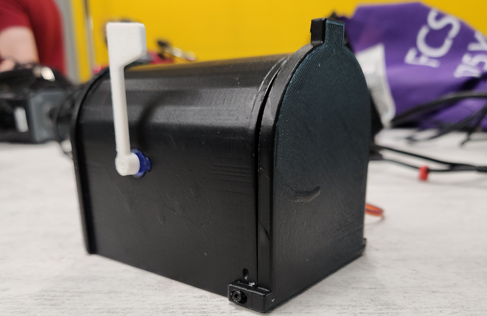

SmartMail
What We Did
For our IoT course, another classmate and I worked together to create an IoT device to demonstrate our understanding of the several concepts that we had gone over in class. This project had been worked on since the middle of the semster and used the ideas and examples we had gone over in class such as using sensors and sevos, creating and accessing databases, and using ESP8266 and Raspberry Pi to control devices and sending/retrieving information between them. For our project, we had decided to create a "Smart Mailbox". The idea was to have something simple enough to do alongside the many other projects we had going on, yet complex enough to demonstrate and use all the concepts we had gone over in class. We settled on a smart mailbox because it wasn't really something either of us had seen before and figured it would interesting to do.
The Pi

Our project made use of a single Raspberry Pi 4. Our Pi acted as the host of both our web dashboard and our database. We had created the database using MariaDB which is a service we can use on our Pi to host a database. The information we stored was relatively simple, just a timestamp of when the mailbox detected that something was delivered, and the name of the device. As for our webpage, it was created using a combination of HTML, PHP for the getting and setting of data, and some JavaScript for the creation of the buttons present on our webpage. The dashboard features a table of timestamps, two buttons to either enable the sensor and reset the servos or turn off the sensor and servos, and a section which tells the status of the mailbox's lock and sensor.
The Database
Alongside our webpage, our database was quickly created using MariaDB on our Raspberry Pi. After performing the installation necessary to use it on the Pi, we used the included commands within the service to create a database containing a table labeled "Readings" which can contain a device name and timestamp. The idea was to have our PIR sensor recieve a signal and in response, have our ESP8266 post an entry to this table with the name of the device and the time the sensor went off. We had an entire class session going over MariaDB and how to use it during the course and my partner and I were able to create our database with ease thanks to what we went over.
The ESP8266
Our project makes use of an arduino board with a chip called an ESP8266. This board allowed us to control our servos and sensors while also giving us the ability to make HTTP requests. With the help of some documentation for setting up our ESP8266 and several of the examples we did in class, we were able to wire our servos and sensor to our arduino board quickly, although, there were some issues with getting the wiring of the PIR sensor correct. Originally, we had wired the sensor incorrectly and were facing issues where the signals were in reverse. Meaning, if motion was detected, we wouldnt get a signal, but if there was, the sensor would send a signal. The sensitivity of the sensor was also completely messed up. Thanks to a little help from our professor, we were able to quickly resolve this. Once the wiring was out of the way, we went on to work on the code. Our code was written using the Arduino IDE. Our code uses many of the previous examples we have gone over in class. To explain it briefly, we simply identify the servos and PIR sensor and establish a connection with the two webpages hosted by our Pi. The sensor begins in an active state where it looks for motion. Until it senses some sort of motion, nothing happens. Once motion is detected, our mailbox waits until motion completely stops. The way a PIR sensor works is that it relies on heat, so motion will continue to be captured until either the box is left open and nothing is within the vicinity or the lid is closed. Once it figures that the lid is closed, the ESP8266 sends to the Pi the device name and timestamp of when the lid was closed in JSON format using a POST request and it will also update the status of the lock and the sensor on the status page. Then the servos are rotated and the state of the sensor is set as inactive. When the sensor is inactive, nothing will happen except the ESP8266 will continually check if the state had been updated by continually sending a GET request to the Pi's status webpage to get the status of the sensor. The toughest part of this project for us was getting the ESP8266 to communicate to the webpages and creating the system that allows us to control the sensor and servos through the webpage. After much trial and error though, we were able to figure it out.
Video Demo & Conclusion
To give you a better idea of what the project looks like, heres a video demonstration I took at public event at BW where we had to present our projects to several guests and professors. In the video, I activate the device which enables the sensor to look for motion and unlocks the door and lowers the flag. Then I proceed to place an item in the mailbox (one hand delivered gummy donated to us by a classmate) and shut the door. The sensor stops reading motion and triggers the servos to rotate. In addition to rotating the servos we can see that a timestamp is posted to the web dashboard as well as updating the status of both the sensor and the lock. I then deactivate the system and retrive the deposted item. Overall, this was a very fun project and I hope to create more IoT devices in the future!